En el mantenimiento de videos se despliega un submenú en el cual podrá seleccionar entre Categoría Videos, Estado Video y Videos, estos formularios
contienen
especificamento solo la información referente a los Videos.
Al seleccionar esta opción aparecerá un formulario, en el cual tendrá las opciones:
1. Videos
2. Ingresar
3. Actualizar y Eliminar
4. Buscar
Muestra una presentación de imágenes, la cual se encarga de describir al formulario.
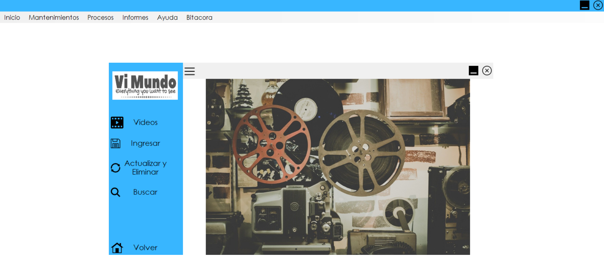
Contiene un formulario, el cual se solicita el ingreso del titulo, Año, Duración, Formato,ID Categoria, Precio, Cantidad, que estos
son todos los datos referentes al video
En el Id Categoría se despliega la información referente al tipo de categoría al cual pertenece el video ingresado, cuando ya se ha ingresado correctamente los datos se da Click en el botón de Guardar Datos
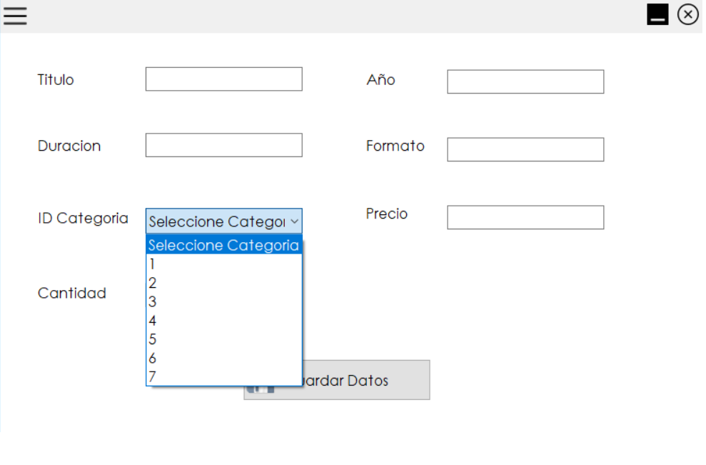Luego aparecerá un mensaje, la cual indica que se guardaron corectamente los datos del Video.
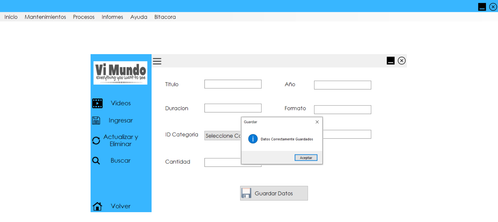Si no se ingresan todos los datos y se da click en el botón de Guardar Datos, aparecerá un mensaje de error, la cual indica que se tiene que llenar algun campo que falto.
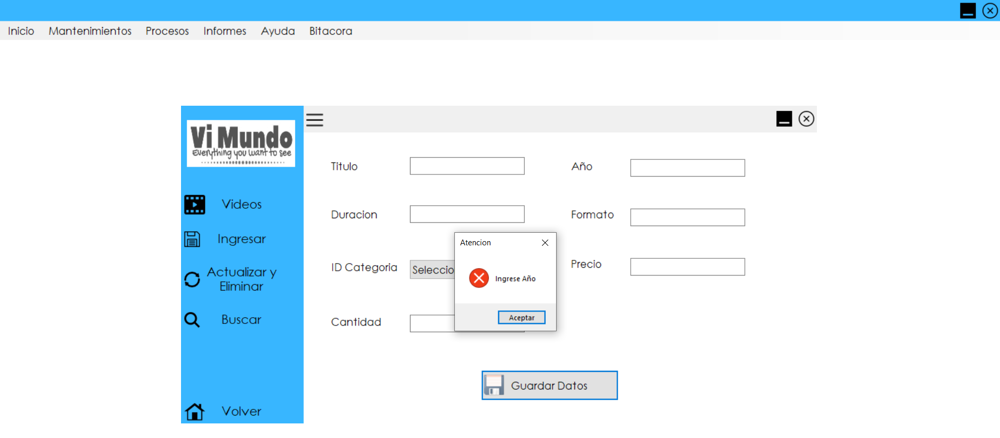Contiene un formulario en el cual se despliega toda la información de los videos que están registrados, en el cual se puede Actualizar y Eliminar los registros.
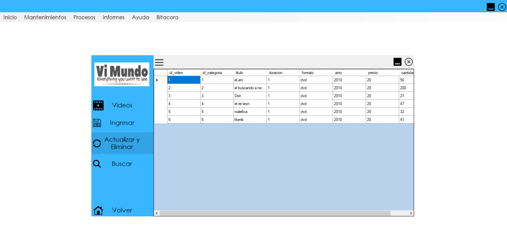Para poder actualizarlo se da click en el campo que deseamos modificar o actualizar borramos el contenido y se sustituye por el dato deseado.
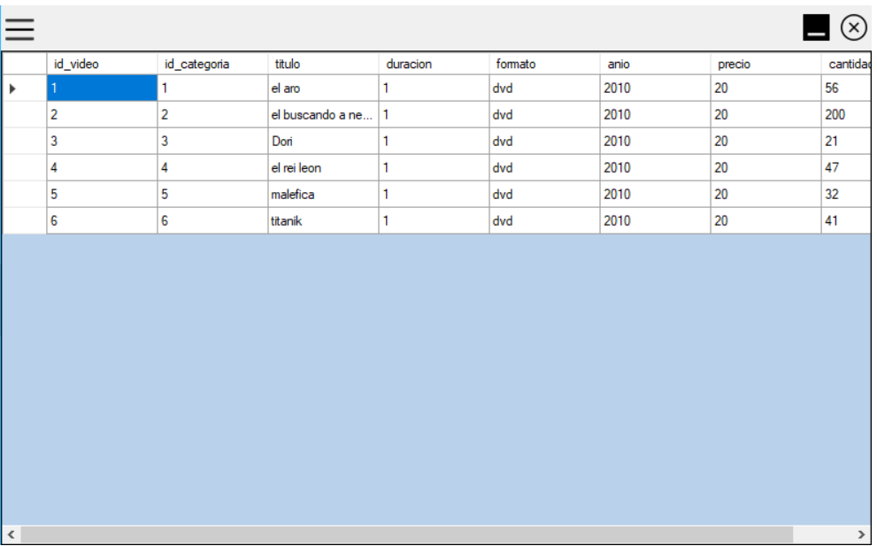Cuando ya se realizo dicho cambio se da Enter y aparecerá un mensaje el cual indica que se actualizo correctamente los datos.
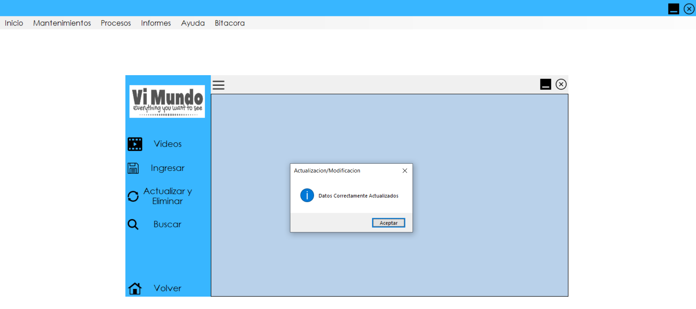Damos click derecho sobre el video que se desea Eliminar, se desplegará la opción de "EliminarDato". Recuerde que al ejecutar esta acción usted estará borrando todo la fila no solo un campo seleccionado.
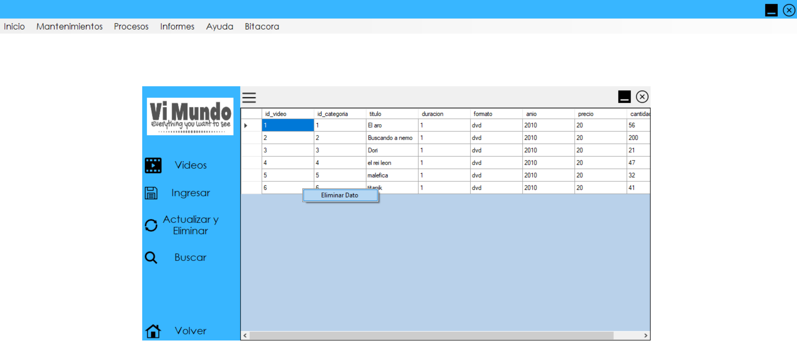Luego automáticamente aparecerá un mensaje el cual indica que se eliminó correctamente el dato.
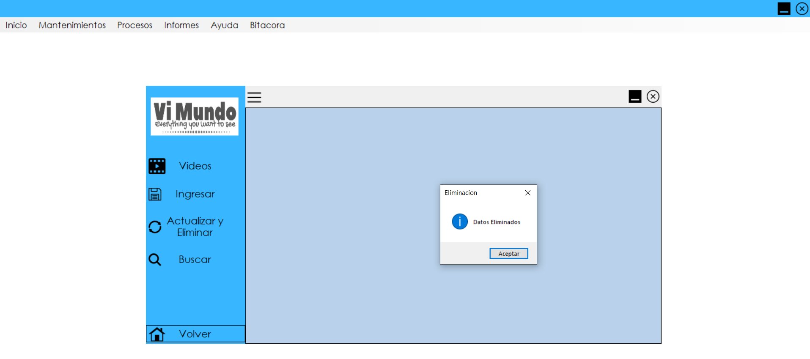En este formulario se podrá Buscar que videos son los que existen, ya que contiene un menú desplegable, en el cual, se podrá seleccionar como se desea buscar el video, por el ID, Id Categoria, titulo, Duración, Formato, Año.
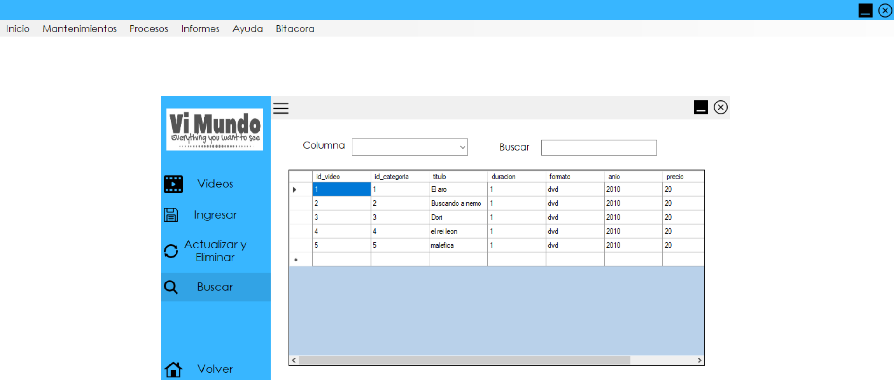Cuando ya se ha seleccionado la opción para buscar el video, se escribe la información dependiendo de la opción seleccionada y automáticamente cargara la información del video que se desea.
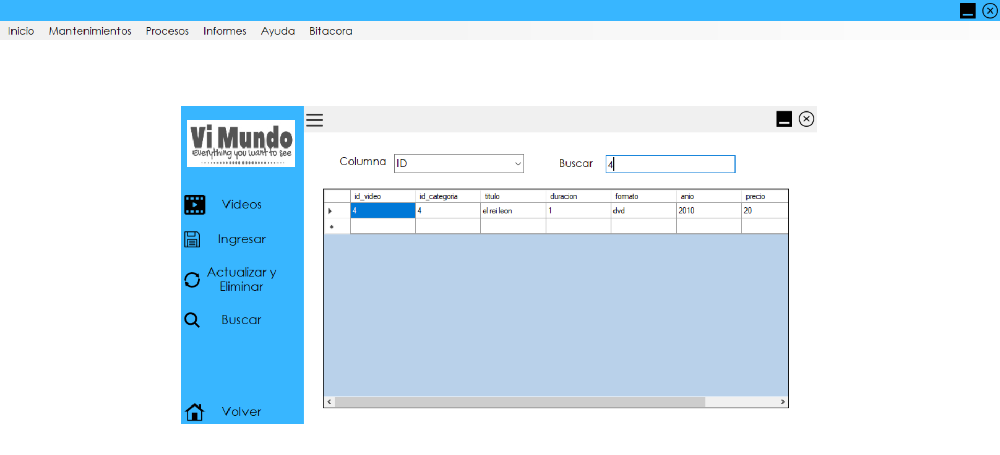